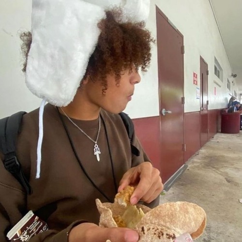
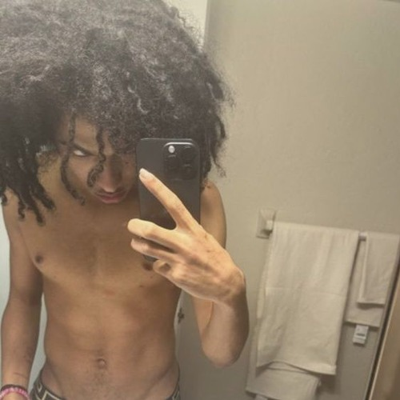
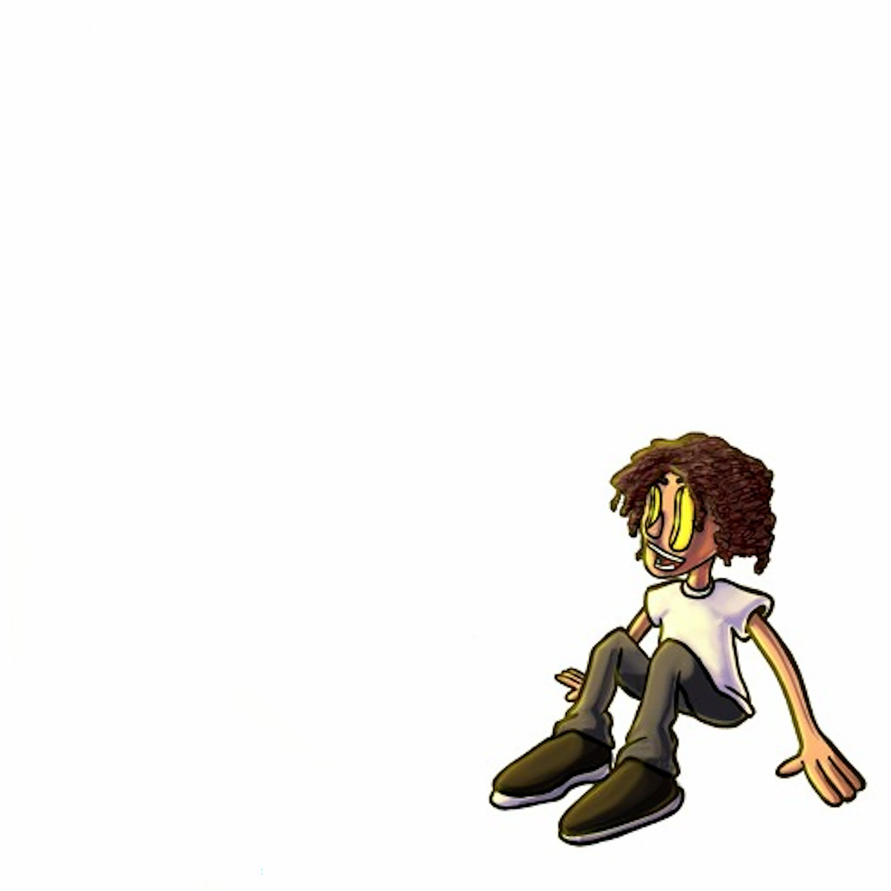
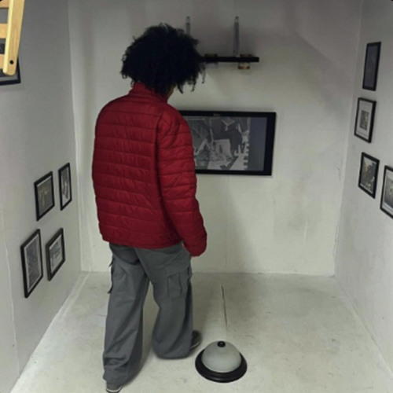
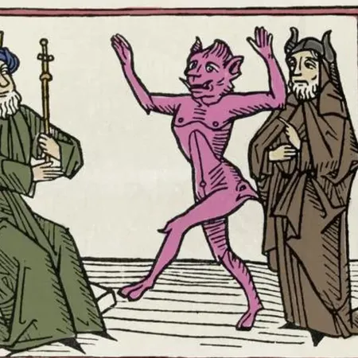
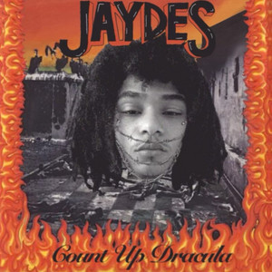
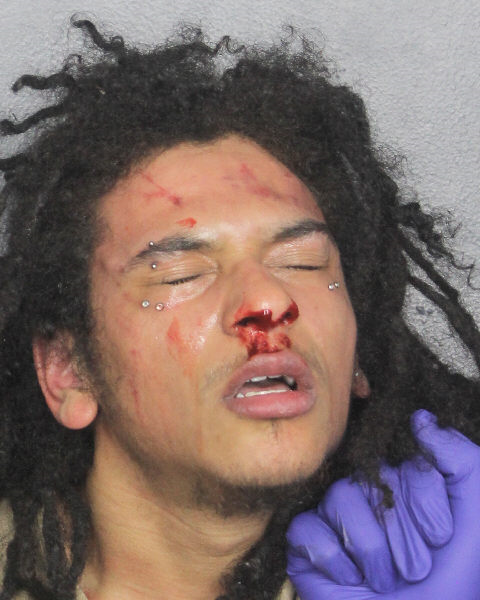
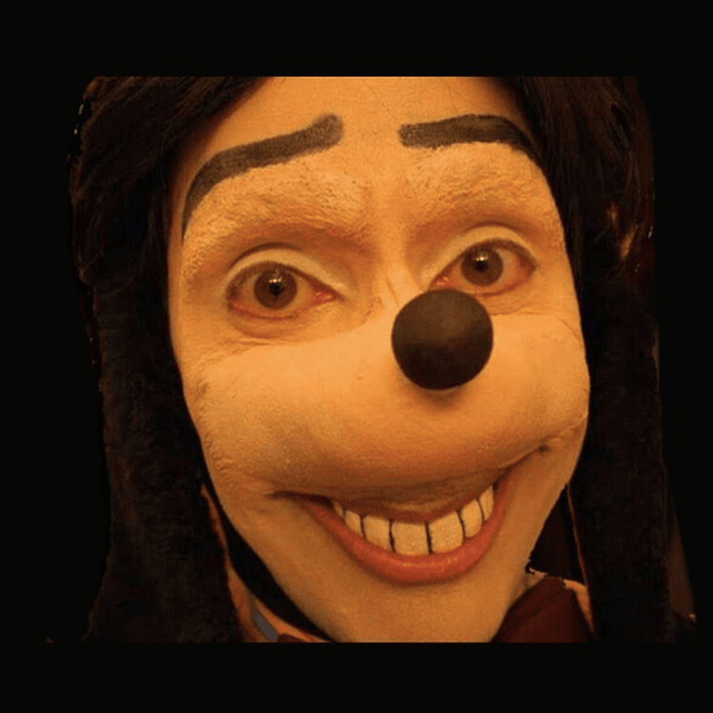
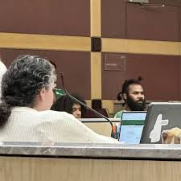

2019
De eerste opnames
Jaydes begint in 2019 met het maken van muziek via Audacity.
2020
Eerste releases als Evvls
In 2020 plaatst hij zijn eerste tracks op SoundCloud onder de naam Evvls.
2021
Debuut-EP: !?
Zijn eerste EP '!?', samen met Yung Fazo, verschijnt in december 2021.
2022
Doorbraak met Romanticism
Romanticism EP wordt geprezen om zijn zachte vocalen en gitaarspel.
2022
Hit-single Poison
Zijn single Poison scoort miljoenen streams en zet hem stevig op de kaart.
2023
Ghetto Cupid album
Zijn eerste studioalbum wordt gemengd ontvangen, maar bevat de populaire track 'Rose'.
2024
Punkfase met Count Up Dracula
Jaydes schakelt volledig over naar punkrock op zijn tweede studioalbum.
2024
Arrestatie en controverse
In november 2024 wordt hij gearresteerd na ernstige beschuldigingen.
2025
Post-arrest releases
Ondanks alles brengt hij anoniem muziek uit onder de naam 'Nunya'.
2025
Wachten op rechtszaak
Op dit moment wacht Jaydes op zijn proces na het breken van zijn borgvoorwaarden.